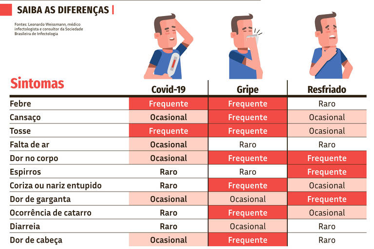
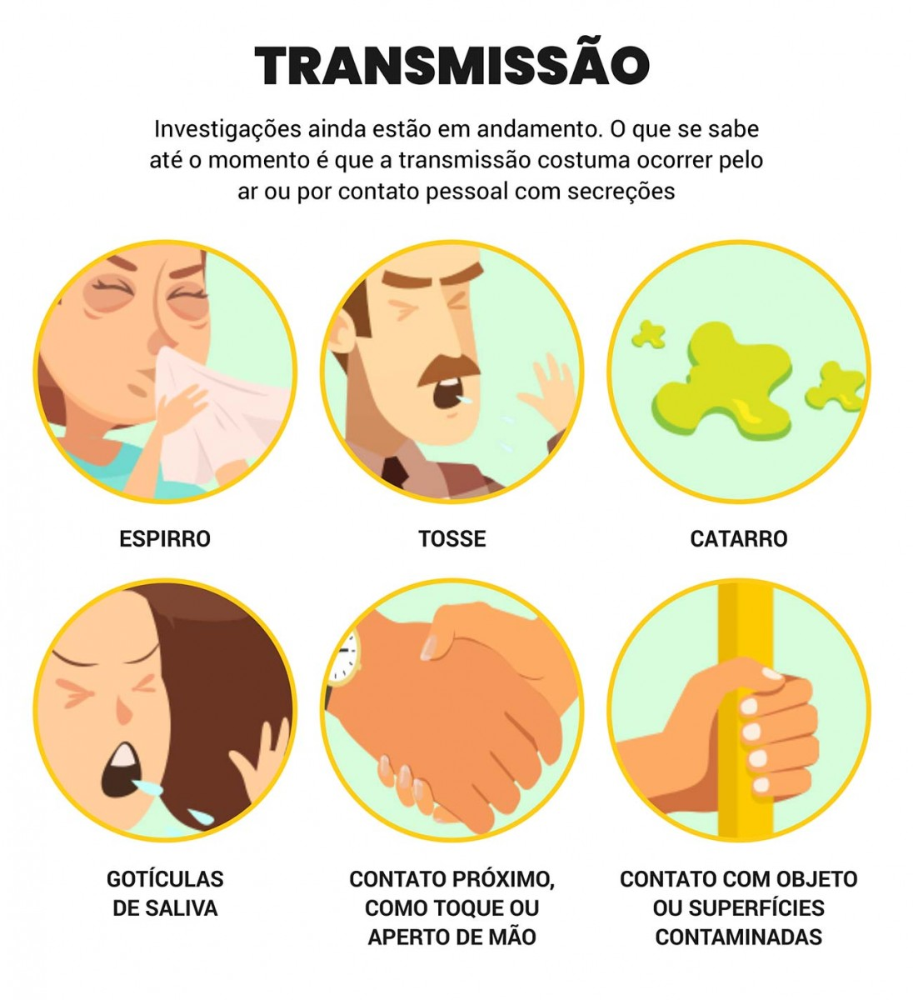
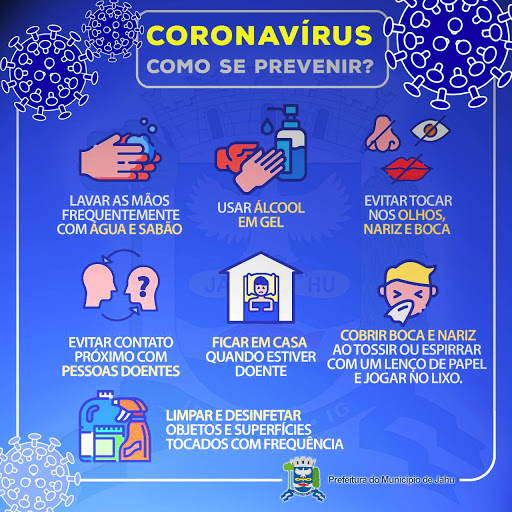

Coronavírus
Postado 01 Outubro 2020 Sintomas:
Os sintomas da COVID-19 podem variar de um resfriado, a uma Síndrome Gripal-SG (presença de um quadro respiratório agudo, caracterizado por, pelo menos dois dos seguintes sintomas: sensação febril ou febre associada a dor de garganta, dor de cabeça, tosse, coriza) até uma pneumonia severa. Sendo os sintomas mais comuns:
A COVID-19 é uma doença causada pelo coronavírus, denominado SARS-CoV-2, que apresenta um espectro clínico variando de infecções assintomáticas a quadros graves. De acordo com a Organização Mundial de Saúde, a maioria (cerca de 80%) dos pacientes com COVID-19 podem ser assintomáticos ou oligossintomáticos (poucos sintomas), e aproximadamente 20% dos casos detectados requer atendimento hospitalar por apresentarem dificuldade respiratória, dos quais aproximadamente 5% podem necessitar de suporte ventilatório.
Leia maisTransmissão
Postado 01 Outubro 2020A transmissão acontece de uma pessoa doente para outra ou por contato próximo por meio de:
 Leia mais
Diagnóstico
Postado 01 Outubro 2020O diagnóstico da COVID-19 pode ser realizado a partir de critérios como:
1 - O DIAGNÓSTICO CLÍNICO
2 - O DIAGNÓSTICO CLÍNICO-EPIDEMIOLÓGICO
3 - DIAGNÓSTICO CLÍNICO-IMAGEM
4 - DIAGNÓSTICO LABORATORIAL
Prevenção
Postado 01 Outubro 2020As recomendações de prevenção à COVID-19 são as seguintes:
 Leia mais

Ana Gabrieli Oliveira